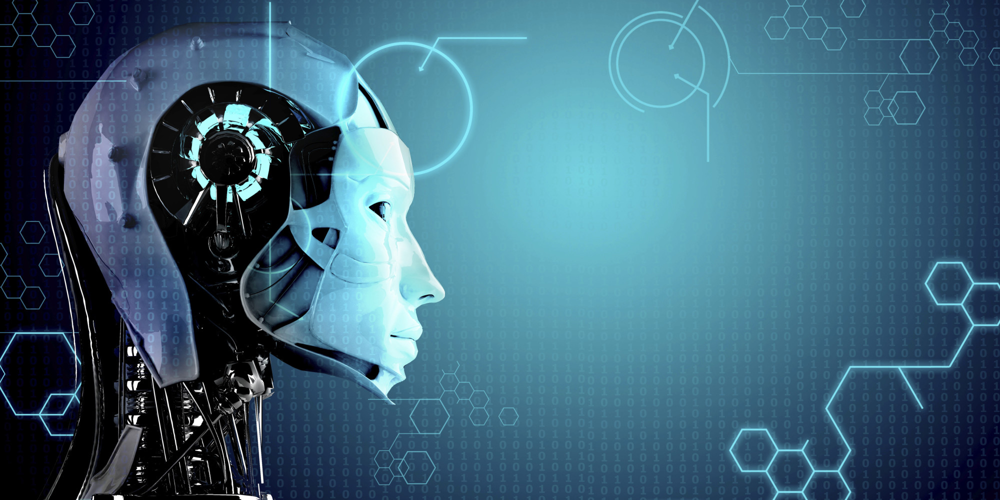

When most people hear the term artificial intelligence, the first thing they usually think of is robots. That's because big-budget films and novels weave stories about human-like machines that wreak havoc on Earth. But nothing could be further from the truth.
Artificial intelligence is based on the principle that human intelligence can be defined in a way that a machine can easily mimic it and execute tasks, from the most simple to those that are even more complex. The goals of artificial intelligence include learning, reasoning, and perception.
As technology advances, previous benchmarks that defined artificial intelligence become outdated. For example, machines that calculate basic functions or recognize text through optimal character recognition are no longer considered to embody artificial intelligence, since this function is now taken for granted as an inherent computer function.

AI is continuously evolving to benefit many different industries. Machines are wired using a cross-disciplinary approach based in mathematics, computer science, linguistics, psychology
Computers and electronics play an enormous role in today's society, impacting everything from communication and medicine to science.
Although computers are typically viewed as a modern invention involving electronics, computing predates the use of electrical devices. The ancient abacus was perhaps the first digital computing device. Analog computing dates back several millennia as primitive computing devices were used as early as the ancient Greeks and Romans, the most known complex of which being the Antikythera mechanism. Later devices such as the castle clock (1206), slide rule (c. 1624) and Babbage's Difference Engine (1822) are other examples of early mechanical analog computers.
The introduction of electric power in the 19th century led to the rise of electrical and hybrid electro-mechanical devices to carry out both digital (Hollerith punch-card machine) and analog (Bush’s differential analyzer) calculation. Telephone switching came to be based on this technology, which led to the development of machines that we would recognize as early computers.
The presentation of the Edison Effect in 1885 provided the theoretical background for electronic devices. Originally in the form of vacuum tubes, electronic components were rapidly integrated into electric devices, revolutionizing radio and later television. It was in computers however, where the full impact of electronics was felt. Analog computers used to calculate ballistics were crucial to the outcome of World War II, and the Colossus and the ENIAC, the two earliest electronic digital computers, were developed during the war.